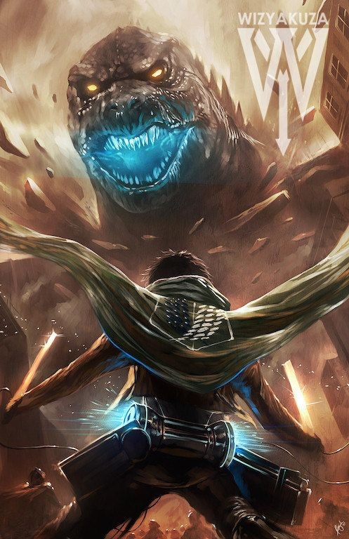

Levi
Critique:
Visual Clutter & Texture Overload: The dense accumulation of floating rocks, dust particles, and intense light streaks creates a noisy midground, making it somewhat difficult to parse complex shapes and silhouettes.
Prominent Watermark Branding: The large "WIZYAKUZA" logo and crest in the top-right corner disrupt the fictional illusion and pull focus away from the upper focal points.
Praise:
Dynamic Low-Angle Perspective: The extreme low-angle perspective looking upward from behind the soldier creates an imposing sense of scale, exaggerating the monster's immense size and visual threat.
High-Impact Focal Lighting: The glowing cyan energy radiating from Godzilla’s jaw acts as a powerful visual anchor, drawing the viewer’s eyes straight across the diagonal axis of the composition.
Kinetic Action & Motion: Dynamic cape folds, airborne debris, glowing embers, and bright lens flares give the scene a sense of immediate movement and cinematic chaos.